Every control below drew its icon as a Unicode character rather than an SVG. The question for each was not “does it look odd” but “which font actually drew it”. Answered two ways: the bundled faces’ cmap (Geist Sans latin, 538 codepoints; Geist Mono, every subset it loads), and CSS.getPlatformFontsForNode on the real components, mounted from main in headless Chromium on macOS against a fake window.pwrgit. Every repository, branch and path is invented.
U+00D7yesyesSans 500 20pxGeist MediumU+2315nonoSans (inherited)MenloU+0023yesyesMono 700 12pxGeist Mono SemiBoldU+2715nonoSans 600 11pxZapf DingbatsU+2715nonoSans 600 11pxZapf DingbatsU+2713nonoMono 700 10pxMenloU+25CFyesnoMono 700 10pxMenloU+2715nonoMono 700 10pxMenloU+2713nonoMono 700 11pxMenloU+2715nonoMono 700 11pxMenloU+25CByesnoMono 700 11pxMenloU+00D7yesyesSans 600 13pxGeist SemiBoldU+00D7yesyesSans 700 9pxGeist BoldU+2713nonoSans 500 12pxGeist Medium, .SF NSU+2699nonoSans 13pxMenloU+FF0BnonoSans 13pxPingFang SCU+25CFyesnoMono 600 10pxMenlo, Geist Mono SemiBoldU+24D8nonoSans 11.5pxHiragino SansU+26A0nonoSans 11.5px.SF NSU+2715nonoSans (inherited)Zapf DingbatsThe characters in the second column are drawn by your browser, which is the point: they can differ from the macOS captures in 1b. Green is a bundled web font; red is whatever the OS had.
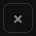
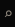
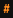
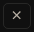
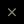
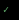
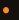
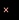
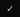
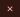
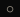
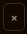
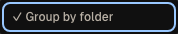
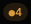
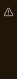
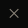
Vector magnification flatters a glyph; this does not. Each crop is the control’s own box plus 3 px, so where the mark sits in it is visible too.
Menlo, Zapf Dingbats, PingFang SC, Hiragino Sans and the system face — five families for one icon column. Each has its own weight, size and baseline, and Windows and Linux substitute a different five. That is the “looks broken next to the SVG glyphs”.
● and ○ drew in MenloBoth are in Geist Sans, and styles/AGENTS.md lists ●{dirty} as safe on that basis. But every site that uses them as a mark — the dirty badge, the remote steps, the proof ledger — sets them in --font-mono, and Geist Mono does not have them. The mono stack never reaches Geist Sans, so they go to the OS.
× is in Geist, and still the wrong drawingIt is the multiplication sign: sized to sit between digits, centred on the x-height. At 19–20 px in a 28 px close button it is a small cross floating low, beside the 14 px stroked X that the palette, diff pane and lightbox already drew — four close marks in one app.
“✓ Group by folder” was the menu item’s label, so a screen reader read “check mark Group by folder” and no state. The menu now has a real toggle: menuitemcheckbox with aria-checked, and the check is an aria-hidden SVG.
Four dialog closes (Clone, Fork, Fork checkout, Fork tracking), the profile modal's remove-folder, the wizard's close, the agent menu's two checks, Local agents' allowed check, the diff hunk chip's ✓, Rebase's “Checked ✓” / “Applied ✓”, the wizard rail's “Step 1 ✓”, the ⌘K and worktree-header dirty badges, the hooks sheet's ▸/▾ (ChevronGlyph), the PR section's “⟳ asks GitHub” (RefreshGlyph inline, with an sr-only “Refresh”), and the rail's › collapse (PanelCloseGlyph).
Follow-up, not in this change: arrows and key symbols set in --font-mono (→ in the PR section’s base, ≈ ← → in commit alignment, ↵ in the palette footer, ⇧ ⏎ in the diff help keycaps) fall back for the reason finding 2 gives. That is a font-stack fix — let the mono stack fall through to Geist Sans — not an icon fix.
Try next: “probe the same sites on Windows” · “which of the kept arrows does the mono follow-up actually change?”
Every replacement is a lib/*Glyph.tsx component in the house style: 24-unit viewBox, currentColor stroke scaled with size, round caps, aria-hidden, Lucide geometry transcribed by hand. The control’s own label carries the meaning; none of the accessible names changed. Captures are the same scenes as turn 1, built from this branch.
Every close, dismiss, remove and failed mark. The palette, diff pane and lightbox already drew it inline at 14 px; they now share the component, unchanged.
Done, passed, chosen. Already the agent menu's radio mark.
Running step; uncommitted changes. Filled because the step beside it is a stroke.
A proof that has not run. Same outer edge as the disc.
The ⌘K palette's lens, so both filters draw one mark.
The lineage chip's tag mark; the refs rows now agree with it.
Edit profile. The teeth hold at 13 px — see 2b.
New profile, like every other create button.
Informational notice.
Warning notice; triangle vs circle is the silhouette channel.
The rail's collapse, the pair of the header's Show panel.
Closed disclosure; down when open.
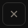
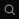
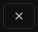
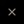
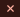
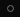
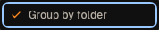
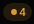
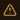
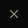
What to look for: one weight down the whole column, marks centred in their boxes rather than riding a baseline, and the four X marks now one drawing. The gear was the open question at 13 px — its teeth survive the raster, so it stays a gear rather than becoming a pencil.
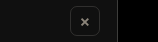
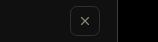
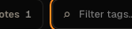
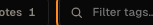
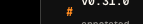
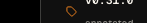
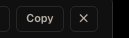
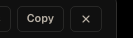
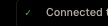
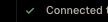
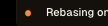
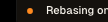
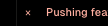
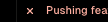
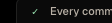
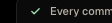
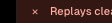
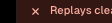
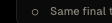
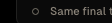
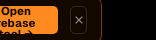
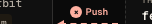
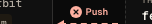
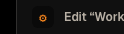
The legibility rule from the palette review applies here as a column rule: the remote steps and the proof ledger stack ✓, ✕ and a dot in one column, and they separate by silhouette — a tick, a cross, a disc, a ring — not by counting.
Try next: “draw the light theme” · “should the hunk chip’s + become PlusGlyph too?” · “redraw the ! refusal disc as a glyph”